Как изменить состав компонента интерфейса
В этом примере вы измените форму объекта справочника КонтактныеЛица.
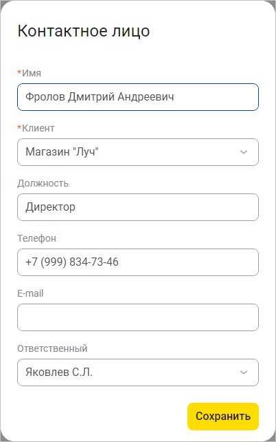
Вы добавите в нее две горизонтальные группы и сгруппируете поля Клиент - Должность и Телефон - E-mail.
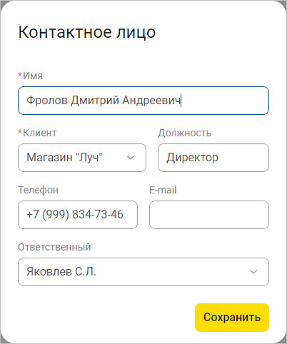
Откройте демонстрационное приложение DEMO CRM в среде разработки и выполните следующие действия:
- Раскройте подсистему Пресейл, в ней раскройте справочник КонтактныеЛица и нажмите на
компонент КонтактныеЛицаФормаОбъекта;
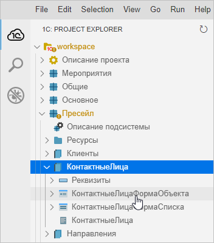
- Будет открыт редактор компонента интерфейса. Он имеет область предпросмотра, в которой вы видите, как выглядит компонент в интерфейсе.
Слева находится структура компонента, развернув которую вы увидите, что исходный компонент ФормаОбъекта
содержит в себе (свойство Содержимое) экземпляр системного компонента ОбычнаяГруппа, в котором (свойство Содержимое) содержатся 6 экземпляров стандартного компонента ПолеВвода (одному из них задано имя ПолеВводаКлиента).
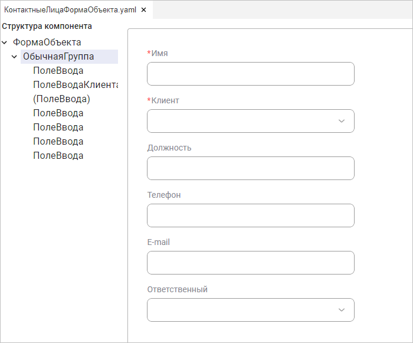
- Чтобы добавить в состав формы объекта две группы, воспользуйтесь этим редактором. А чтобы перенести существующие поля в эти группы и
задать их свойства, вы воспользуетесь YAML-редактором. Итак, нажмите New Content в контекстном меню на строке
ОбычнаяГруппа;
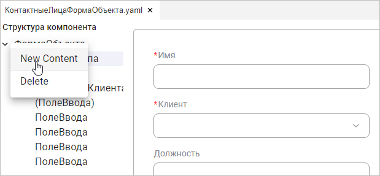
- В строке поиска введите "обыч" и выберите системный компонент ОбычнаяГруппа;
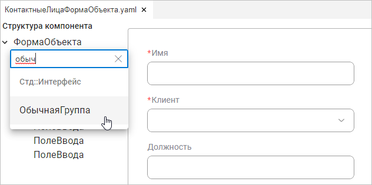
- Повторите это действие. В результате у вас появятся внизу две группы. Выделите первую из них и нажмите EDIT IN
SOURCE в панели PROPERTIES, чтобы перейти в YAML-редактор;
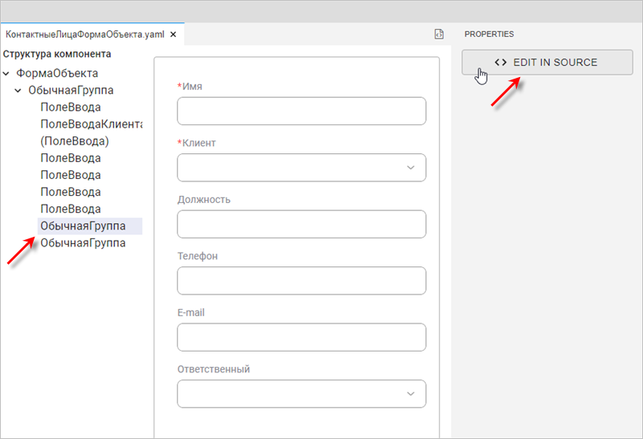
- YAML-редактор выделит в тексте ту группу, которую вы отметили в структуре, чтобы вам было проще ориентироваться в тексте. Теперь ваша
задача заключается в том, чтобы переместить эти две группы на свои места в содержимом: одну перед полем с заголовком
Клиент, а другую перед полем с заголовком Телефон;
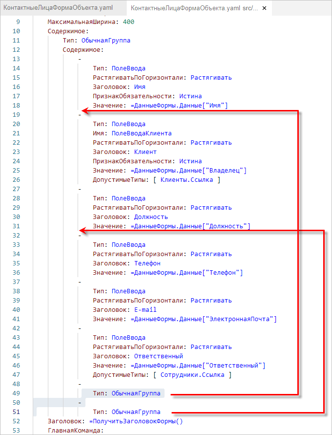
- У вас должен получиться такой результат;
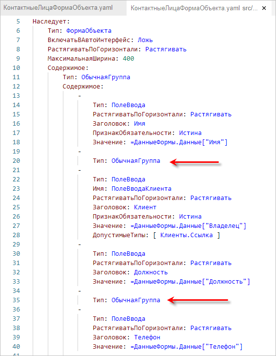
- Теперь, используя контекстную подсказку (пример), для первой группы задайте свойство
Ориентация и создайте свойство Содержимое;
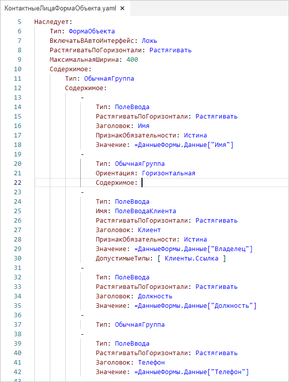
- Чтобы следующие два поля перенести в содержимое этой группы, выделите их....;
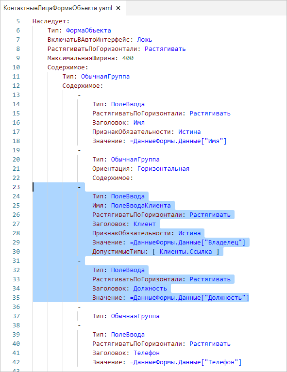
- .. а затем с помощью клавиши Tab передвиньте на две позиции, в группу
Содержимое;
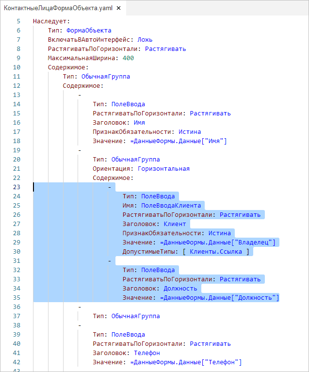
- Аналогичным образом создайте свойства второй группы и перенесите в нее поля Телефон и
E-mail;Совет: Операции с блоками текста могут понадобиться вам в дальнейшем, поэтому запомните, что Tab перемещает блок на одну позицию вправо, а Shift+Tab — на одну позицию влево.
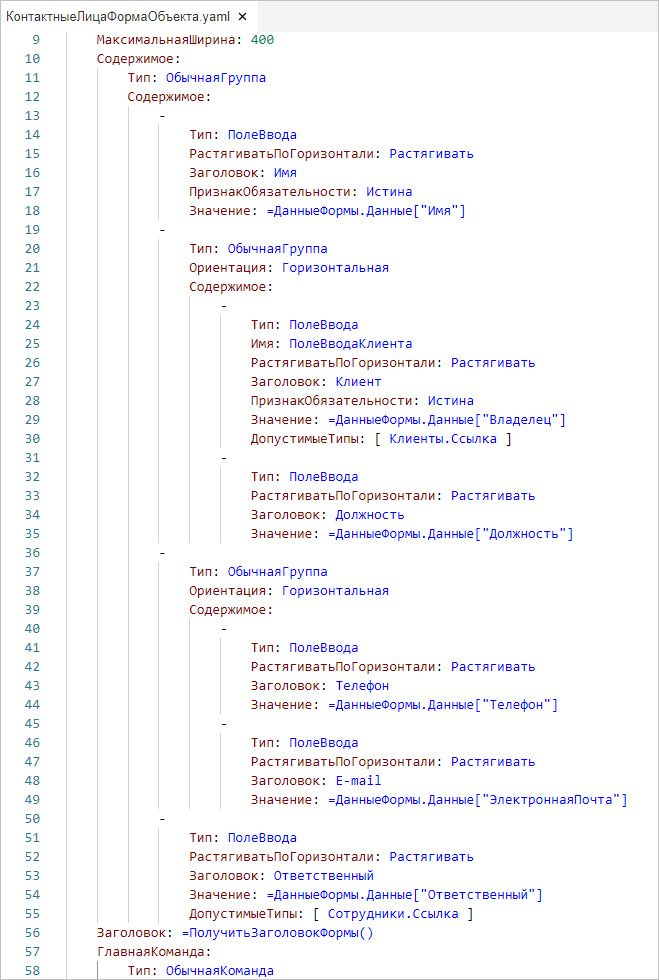
- Если теперь вы перейдете на вкладку редактора компонента интерфейса то увидите, что его внешний вид изменился;
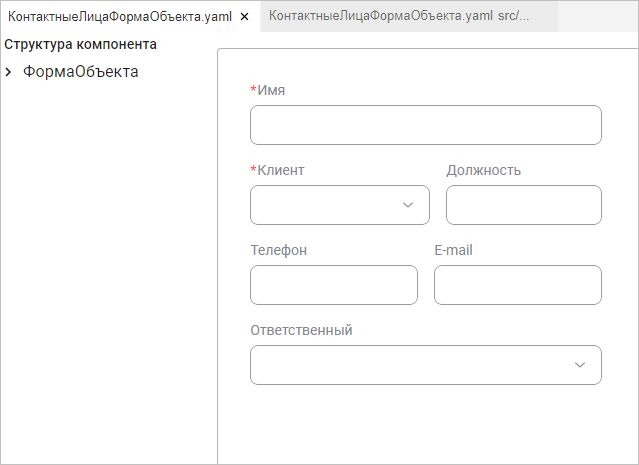
- Опубликуйте проект на сервере и перезапустите приложение. Нажмите и вы увидите новый вид формы.